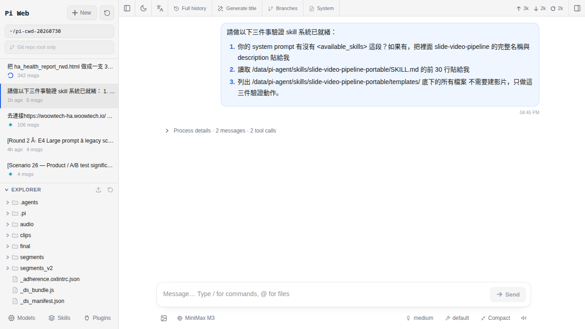

對話裡的思考塊、工具卡片、diff 是什麼
開始跟 AI 講話後，你會發現它的回答旁邊冒出一些奇怪的方塊：灰色可以展開的、白色寫著工具名稱的、紅綠對照的程式碼。這章一次講清楚每一種是幹嘛的、什麼時候該打開來看、什麼時候可以直接無視。讀完你就不再是「看 AI 黑箱吐答案」，而是「看 AI 在做事」。
為什麼要學會看這些方塊
還記得 第 7 章開第一個對話時，那些「AI 回答上下多出來的東西」嗎？灰色可以按 ▶ 展開的、白色像卡片的、紅一段綠一段像考卷改錯的——那些不是介面裝飾，也不是 bug，而是 Pi Agent 跟一般 ChatGPT 網頁最大的差別：它把 AI「內心的想法」和「動手做的紀錄」通通攤在你面前。
會看的人可以做到：
- 答案怪怪的時候，展開思考塊追出 AI 是哪一步想歪了。
- AI 說「我幫你讀了
configuration.yaml」的時候，展開工具卡確認它到底讀了哪個檔、有沒有讀對。 - AI 提議改設定檔之前，展開 diff 逐行檢查再決定接不接受——這是「你允許 AI 動你的家」之前最後一道人眼把關。
不會看的人：AI 亂改配置檔弄壞 HA、跑錯指令、讀了不該讀的檔，你都是事後才發現。所以這一章的目標很單純：看到每一種方塊，你都能一秒說出「這是什麼、要不要展開」。
三種特殊區塊的分工（一句話版）
先給一張總覽，之後每一節會逐一拆解。看完這張表你就有心智模型，後面的細節都是掛在這張表上的補充：
| 區塊 | 一句話 | 顏色／樣式 | 來自 |
|---|---|---|---|
| 思考塊 Reasoning | AI 在腦袋裡想什麼 | 灰底、預設收起、旁邊有 ▶ | 只有 reasoning 模型才有 |
| 工具卡片 Tool call | AI 呼叫了外部工具做了什麼 | 白色卡片、上方寫工具名 | 任何模型都可能有，看 skill |
| 內嵌差異 Inline diff | AI 建議你改哪個檔（紅刪綠加） | 紅底＋綠底交錯 | AI 要動你檔案時才有 |

思考塊（Reasoning block）詳解
思考塊是三種區塊裡最容易被忽略的一種——因為它預設是收起的，很多人根本不知道它可以點開。
長什麼樣
灰色底、標題寫「Thinking」或「思考中」（依語言設定），左邊有一個小三角 ▶ 或 +。它出現在 AI 正式回答的上方，代表「AI 是先想過這一段，才給你下面那個答案」。點一下 ▶ 展開，就會看到 AI 逐步推理的內容，通常是一大段自言自語的文字。
什麼時候會出現
只有 reasoning（推理）模型才會有。第 12 章會完整拆解各家的差異，這裡先給一張快速對照，看得懂圖 9-1 的思考塊來自哪家就夠了：
| 模型 | Provider | pi-web 的 thinkingFormat | 看得到內容嗎 |
|---|---|---|---|
GLM-4.6（含 <think> tag 或 reasoning_content） | 智譜（Z.ai） | zai | 看得到全文 |
DeepSeek-R1 / R1-0528（reasoning_content） | DeepSeek | deepseek | 看得到全文 |
| Claude Sonnet 4.5 / Haiku 4.5（extended thinking-only）；Sonnet/Opus 4.6（extended 或 adaptive）；Opus 4.7+（僅 adaptive） | Anthropic | SDK 走 thinking 內建 block，Models 表單通常留空 | 看得到，但官方是摘要（summarized）不是原始 CoT |
| Qwen3 / QwQ 系列 | 阿里雲、OpenRouter | qwen 或 qwen-chat-template | 看得到全文 |
| OpenAI o1 / o3 / o4-mini、GPT-5 reasoning | OpenAI | 選 openai（只拿得到 usage 統計） | 看不到——OpenAI 官方策略就是不回傳 CoT，你只會看到 reasoning_tokens 計費數字，沒有思考塊可展開 |
| Kimi K2-Instruct（Groq 上架版） | Moonshot / Groq | 不用選 thinkingFormat（K2-Instruct 不是 reasoning 模型） | 沒有——Groq 上的是 Instruct 版，K2-Thinking 只有 Moonshot 官方 API 有 |
非 reasoning 模型（GLM-4-Flash、GPT-4o、Claude Haiku 3.5、Kimi K2-Instruct 那種）就沒有思考塊——它們是「直接吐答案不留過程」。
thinkingFormat 合法值只有 openai / openrouter / together / deepseek / zai / qwen / chat-template / qwen-chat-template / string-thinking / ant-ling——沒有 native、也沒有 none。網路上有些第三方教學會寫「Anthropic 選 native」，那是誤傳；Anthropic 走的是 SDK 內建 type: "thinking" content block，走的是 @anthropic-ai/sdk 那條路，Models 表單的 thinkingFormat 欄位對它其實沒作用，留空即可。展開能讀到什麼
會看到 AI 在給你正式答案前的推理過程，例如：「使用者想要一個晚上 10 點關客廳燈的自動化。我需要用 time 觸發，動作是 light.turn_off，還要考慮如果沒人在家的話⋯⋯」這種一連串的自言自語。有時候長達幾百字，有時候只有兩三行。
什麼時候該讀
- 答案怪怪的、跟你預期差很多，想追蹤 AI 為什麼這樣回。
- 想學它的分析框架（例如 AI 怎麼把「晚上 10 點關燈」分解成觸發／條件／動作）。
- 想確認 AI 有沒有考慮到某個特殊條件（例如「有人在家才不要關」）。
什麼時候可以不用讀
- 一般家用問題、AI 回得對且乾淨。
- 只是問一個查詢型的問題（「HA 支援幾種 domain」這種）。
- 反正你也不打算採用這個答案。
為什麼有時候明明選了 reasoning 模型卻看不到思考塊
三個可能：
- 第 6 章教的
reasoning勾選沒打勾——GLM-4.6 的 model entry 進階區塊有一個reasoningcheckbox，那才是使用者面向的開關；沒勾的話 pi-web 收得到思考內容但不會展開顯示。 - Provider 底下的 thinkingFormat 選錯——這是 provider 層的欄位（不是 model 層），OpenAI 相容端點通常留
openai，GLM 選zai、DeepSeek 選deepseek、Qwen 選qwen；Anthropic 走內建 SDK 不用選。設錯的話 pi-web 拆不出reasoning_content，就會把思考文字整段塞進正式答案或直接吃掉。 - 你選到了 provider 底下的非 reasoning 模型——例如智譜的下拉裡除了 GLM-4.6 還有 GLM-4-Flash，後者不是 reasoning；Groq 上的 Kimi K2 只有 Instruct 沒有 Thinking。看模型名字對照一下。
工具卡片（Tool call）詳解
工具卡片是三種區塊裡最重要的一種——因為它代表「AI 真的動了東西」，你必須知道它動了什麼。
長什麼樣
白色的卡片、上方寫「Tool: xxx」或「Calling xxx」，中間有一個小區塊列出輸入（parameters）與輸出（result）的摘要。點卡片可以展開看完整內容。有些卡片跑到一半會顯示「Running⋯⋯」轉圈，跑完會亮綠燈（成功）或紅燈（失敗）。
什麼時候會出現
AI 需要「動手做」而不只是「回答文字」時。動手包含：讀你貼過來的檔案、跑一段 bash 指令、抓網頁、查天氣、搜資料庫等。哪一種工具會被叫出來，取決於你裝了哪些 skill（第 16 章會教你自己寫 skill）以及 AI 覺得該不該用。
常見的工具名稱速查（pi coding agent 內建 7 支）
Pi Agent 的核心 agent（@earendil-works/pi-coding-agent）內建工具只有這 7 支，卡片上顯示的就是這幾個字，全小寫：
| 工具名 | 做什麼 | 你要不要展開看 |
|---|---|---|
read | 讀一個檔案 | 建議看，確認讀對檔 |
write | 寫入／覆蓋一個檔案（整份取代） | 一定要看，確認路徑跟內容都對 |
edit | 對現有檔案做小片段替換（產生 inline diff） | 一定要看，diff 就是它給的 |
bash | 跑一段 shell 指令 | 建議看，尤其是 rm、mv、sudo |
grep | 在檔案裡搜關鍵字 | 通常不用看，除非結果怪 |
find | 找檔名／目錄結構 | 通常不用看 |
ls | 列一個目錄底下有什麼 | 通常不用看 |
read_file／write_file／web_fetch／search——那是 Claude Code 或其他 agent 框架的命名，pi coding agent 不叫這些名字，也沒有內建的 web fetch 工具。要抓網頁得靠 skill（例如裝一個帶 curl 或 playwright 的 skill）或叫它 bash: curl ...。裝了 skill 之後才會有額外的工具名字出現在卡片上，那些名字由 skill 自己決定，不在這 7 支之列。展開能讀到什麼
兩塊：實際傳給工具的參數（例如 read 的 path 是什麼、bash 的 command 是什麼）、以及工具回傳的結果（檔案內容、指令輸出、grep 命中行等）。這是「AI 到底做了什麼」的證據，比 AI 自己說的更可靠。
什麼時候該讀
- AI 說「我讀了 xxx」的時候，展開對應的
read卡確認它讀對了。 - 看到
write／edit這類會動檔案的，一定要展開看，尤其是path對不對；edit還要看old_string是不是真的來自原檔。 - 看到
bash卡片，展開看指令有沒有危險字（rm -rf、chmod 777、curl | sh）。 - AI 給的結論跟你預期不同，想追工具的原始輸出，看是不是資料本來就是那樣。
Inline diff 詳解（改檔前的最後把關）
Inline diff 是三種區塊裡最需要你「動眼看」的一種——因為它是「AI 給你的修改提案」，你點頭它才會改。
長什麼樣
一段一段的紅色（- 開頭，被刪除的行）＋ 綠色（+ 開頭，新增的行）程式碼區塊，中間夾著沒變的白色行做為對照。跟 GitHub 的 pull request diff 是同一種東西。
什麼時候會出現
AI 提議改你貼上去的檔案時。例如你把 configuration.yaml 貼進對話說「幫我加個 MQTT integration」，AI 就會回一段 diff 給你看要在第幾行插什麼、刪什麼。
展開能讀到什麼
完整的變更 patch。有的版本會把 diff 折起來只顯示前後幾行，點「展開」可以看到 full context。旁邊通常會有一個「Apply」或「Copy」按鈕。
什麼時候該讀
每一次都要讀。沒有例外。這是「你允許 AI 動你的檔案」之前的最後一道人眼把關。
怎麼採用 diff（三種方式）
-
方式 A：手動複製整段修改後版本
最保守。pi-web 的 diff／工具卡片右上角有一個 Copy 按鈕（i18n 標籤
i18n.copy，中文介面會顯示「複製」），另外有 Show details / Hide details 展開完整 patch，還有 Compare HEAD 可以跟 git 已存的版本比對。把改完後的內容複製起來，自己去configuration.yaml貼上取代原本內容即可。適合「不信任 AI 自動改檔」或「只想套用其中一部分」的情境。 -
方式 B：叫 AI 用
edit或write工具直接改回一句「幫我寫進去」，AI 通常會呼叫
edit（做局部替換、保留其他行）或write（整份覆蓋）工具改檔。優先讓它用edit——出錯範圍限縮在改動那幾行。這時候你要盯緊那張工具卡片：展開看path是不是你想的那個檔、內容有沒有跟 diff 對上。適合「已經看過 diff 覺得沒問題」的情境。 -
方式 C：說「不要」讓 AI 另外想
如果你看完 diff 覺得方向錯了、或有一段不能刪，直接回覆「這樣不對，我要保留 xxx」「請改用 yyy 方式」。AI 會重新生一段 diff。這是最省事的迭代方式，比自己去改半天再貼回來快多了。
configuration.yaml／automations.yaml／scripts.yaml／.storage/ 這幾個關鍵路徑時，務必先備份再套用。第 12 章會講怎麼判斷 AI 提議的改動是不是安全，但通用原則是：改前先做一次 HA snapshot。一個真實例子的解剖
假設你問 AI：「幫我加一個晚上 10 點自動關客廳燈的自動化」。用 GLM-4.6（勾了 reasoning）＋ 裝了 home-assistant-best-practices skill（skill 本身不含新工具，但會給 AI 一份 HA-flavor system prompt，讓它知道要用 edit 而不是 write 蓋掉整個 automations.yaml）。AI 的回應會依序長成這樣：
| # | 你看到什麼區塊 | 裡面是什麼 | 你要不要打開看 |
|---|---|---|---|
| 1 | 思考塊（灰） | AI 自言自語：「使用者要 22:00 關客廳燈。要用 time 觸發，動作是 light.turn_off，target 是 light.living_room。要不要加條件？先做最簡單的版本。」 | 可看可不看，好奇的話展開學它的分解方式 |
| 2 | 工具卡：read（白） | Input: path: /config/automations.yaml；Output: 原本檔案內容 | 建議看，確認讀的是 /config/automations.yaml 不是別的檔 |
| 3 | 工具卡：edit（白）＋ 附帶 Inline diff（紅綠） | Input: path: /config/automations.yaml、old_string: ...、new_string: ...；卡片下方直接 render 出 diff（在檔尾加入新的 automation entry，含 alias、triggers、actions） | 一定要看——尤其確認 entity_id 是不是 light.living_room 而不是別間的燈，也確認 old_string 段落是真的原檔存在的、沒有 hallucinate 出來 |
| 4 | Output: success（同一張 edit 卡的結果段） | 編輯執行結果 | 看有沒有亮綠燈；紅燈代表 old_string 沒 match，改動沒發生 |
| 5 | 正式回答（無框） | 「已經幫你在 automations.yaml 加了新規則，記得去 開發者工具 → YAML → 重新載入自動化 讓它生效。」 | 照做 |
edit 工具設計上就是「舊字串必須逐字對得上」，這是它比 write（整份覆蓋）安全的原因——AI 幻覺出來的行對不上，改動會直接失敗、給你紅燈，比默默寫錯強。看到沒？如果你不會讀這些區塊，你只會看到最後那句「已經幫你加了」——聽起來很爽，實際上你完全不知道它有沒有動對檔、有沒有寫錯 entity_id、有沒有把原本的自動化蓋掉。會讀的人可以在第 3 步 diff 就攔下錯誤，不必等 HA 出問題才回頭找。
這些區塊會不會占很多 context（會不會很花錢）
會。而且比你想的多。三種區塊都算 tokens（就是 AI provider 計費的單位）：
| 區塊 | tokens 佔比 | 誰付 |
|---|---|---|
| 思考塊 | 可能很多（一次幾百到幾千字） | 你付（算 output tokens） |
| 工具卡輸入 | 看你叫它讀什麼檔（read 讀大檔就吃很多） | 下一輪 AI 要「看到」這段的話，算 input tokens |
| 工具卡輸出 | 同上 | 同上 |
| Diff | 看檔多長 | 算 output tokens |
省 tokens 的三個原則（第 12 章會詳講）：
- 只在需要深想的時候用 reasoning 模型。家用日常問題（「查一下今天天氣」「開客廳燈」）用非 reasoning 的 GLM-4-Flash 就好，快又便宜、還沒思考塊佔位。
- 叫 AI 讀檔前先想它需不需要讀整份。如果只是要改一段，可以說「只讀第 X 到第 Y 行」，別讓它把整個
automations.yaml（可能幾千行）通通拉進 context。 - 對話變太長就開新 session。前面累積的思考塊、工具輸出都會被帶進每一輪的 context，一路加下去 tokens 會爆。pi-web 底部有一個
contextUsage指標（顯示 % used / contextWindow tokens）——本版沒有明文的黃／紅門檻，建議自己抓 60% 就準備新 session、80% 一定要開新的，不要撐到 100% 才被 provider 拒單。
關掉思考塊顯示（純看答案）
有些人覺得思考塊很吵、佔畫面又看不習慣，想關掉。老實說：截至本文寫作時的 pi-web 0.8.4（本教學 pin 的版本），沒有 UI 開關可以直接隱藏思考塊——它預設就已經是收起的（左邊 ▶ 那個），除非你點開否則本來就不佔位。想更進一步做視覺化淨化，只有兩條路：
- 回到 第 6 章把 model entry 的
reasoning勾勾拿掉——這樣 pi-web 就不會把思考內容當獨立區塊 render 出來，會直接吞掉。缺點：GLM-4.6 這種模型即使你關掉顯示，provider 那邊還是照算reasoning_content的 output tokens，錢一樣付。 - 直接換非 reasoning 模型——把模型下拉切到 GLM-4-Flash、GPT-4o、Claude Haiku 3.5、Kimi K2-Instruct 那類，AI 根本不會想、也沒思考塊。這才是唯一真正省 tokens 的做法。
0.8.4 沒這個開關，別花時間找。有需要就開 issue 給 @agegr/pi-web 上游。另一種折衷：把「重要的深度問題」跟「日常快問快答」分兩個 session 用不同模型。深度那個開 GLM-4.6 展開思考塊看它推理；日常那個用 GLM-4-Flash 秒答不留過程。這樣兩邊都爽。
常見卡關
-
思考塊點不開、按了沒反應
先看 AI 有沒有跑完——右下角的送出鈕如果還在轉圈，代表答案還在生，思考塊要等它結束才會可展開。等它跑完還是點不開，按 F12 開瀏覽器 devtools 看 Console 有沒有紅字。九成是瀏覽器擴充套件擋 JS，試無痕視窗（Incognito）看看有沒有解。
-
工具卡片顯示 error（紅燈）
展開卡片看 output 欄位的錯誤訊息（pi-web 內部欄位叫
isError）。常見原因：檔案路徑錯（AI 拼錯/config/automations.yaml或缺前面的斜線）、bash指令 exit ≠ 0（權限不夠、指令找不到）、edit的old_string對不上原檔（AI hallucinate 了一段不存在的行）。看到訊息後回覆 AI「這個 tool 失敗了，訊息是⋯⋯，改用別的方式」，讓它重試。 -
Diff 貼上去對不齊、YAML 縮排錯
pi-web 的 diff render 有時候有 whitespace 顯示問題（tab 跟 space 看起來一樣但貼出去差很多）。解法：叫 AI 「請重新輸出完整檔案內容而不是 diff」，然後整份複製貼上取代。或叫它用
write／edit工具直接寫進去，避開你手動複製這一步。 -
我明明選了 GLM-4.6 為什麼沒有思考塊
去 Models 面板檢查 provider 的
thinkingFormat有沒有設zai（第 6 章教過的欄位）。沒設或設錯的話，pi-web 收得到思考內容但不知道要拆出來顯示，就會全部塞進正式答案裡或者直接吃掉。改完 provider 設定要新開一個 session 才會生效。 -
工具卡卡在「Running⋯⋯」轉圈很久
大部分工具幾秒內會結束，超過 30 秒還在轉的話通常是
bash指令跑太久（find /、ffmpeg這種）或read一個超大檔（read 有 max lines 限制但真的 GB 級檔還是會慢）。pi coding agent 本身沒有內建web_fetch工具，所以「網頁抓不下來」在原生 7 支工具裡不會發生——除非你另外裝了 skill 加進來，那就要看那顆 skill 的實作。點卡片右上角有時候有 Cancel 按鈕；沒有的話重新整理頁面（Session 會保住不會不見，只是那次 tool call 會標記isError）。 -
Diff 一直都不出現，AI 只給我一段程式碼
Diff 只有在「AI 認得出你原本檔案內容」時才會產生。如果你只丟一句「幫我寫一個 automation」而沒有貼原本的
automations.yaml，AI 沒有「舊版」可以對照，只能給你「新版全文」。想看 diff 就先把原檔貼進來當 baseline。
常見問題
思考塊很長是好還是壞？
工具卡片可以我自己觸發嗎？
read 讀 /config/configuration.yaml」，AI 就會叫那個工具。前提是內建 7 支（read/write/edit/bash/grep/find/ls）夠用，或那顆工具已經被裝在 session 裡（透過 skill）。想確認裝了哪些 skill 增補的工具，去 pi-web 的 Skills 分頁翻，不是像有些教學說的什麼 <available_tools> XML block——pi-web 沒有這個面板（第 14 章會講 Skill 是怎麼掛進 agent 的）。Diff 裡的程式碼可以完全信任嗎？
light.living_room 拼成 light.liveing_room）、路徑錯（漏了前面 /）、動作用了舊語法（用 service: 而不是新版的 action:）、把不該刪的行刪掉。這些在 diff 裡都會直接看得到，逐行掃過去只要 30 秒。這 30 秒比事後找 bug 快多了。這些區塊有辦法一次全部展開嗎？
document.querySelectorAll('details').forEach(d => d.open = true) 一次全展（要看你 pi-web 版本用不用 <details>）。日常用不到，通常只有匯出 session 做筆記時才需要。